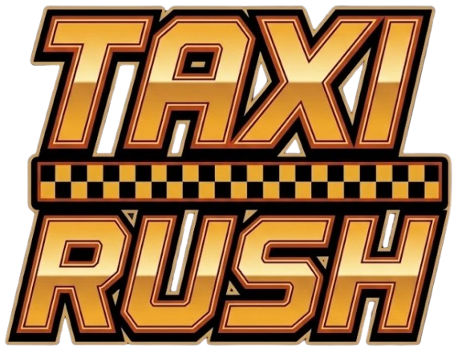

Recette
$0
0 course
Chrono
60
0
km/h
Course en cours
$0
Pourboire
+$0
0
CLIENT
—
Course normale
—
Arrêtez-vous dans le cercle
ZQSD / Flèches — conduire · ESPACE — frein à main · H — klaxon · ÉCHAP — menu
DRIFT
KLAXON
MENU

La ville ne dort jamais, et votre chrono non plus.
ARCADE
Choisir un type de service
OPTIONS
Chronos, trafic, volumes
STATISTIQUES
Votre carnet de bord
CHOISIR LE SERVICE
ARCADE CLASSIQUE
Chrono de départ réglable. Chaque livraison à temps rapporte des secondes.
SERVICE 3 MINUTES
Trois minutes sur le compteur : un maximum de clients, aucun temps bonus.
SERVICE 5 MINUTES
Même mission, cinq minutes pour battre votre record.
SERVICE 10 MINUTES
Le grand service. Endurance, frôlements et gros pourboires.
← RETOUR
OPTIONS
Temps de départ
chronomètre du mode Arcade classique
60 s
Difficulté temps
temps alloué pour chaque course
100 %
Trafic (voitures & piétons)
circulation, voitures garées et passants
55 %
Volume général
80 %
Volume moteur
55 %
Volume effets
85 %
← RETOUR
STATISTIQUES
EFFACER LES STATISTIQUES
← RETOUR
SERVICE
TERMINÉ
—
$0
recette totale
0
courses livrées
0 km
distance parcourue
0 s
temps en service
REJOUER
MENU